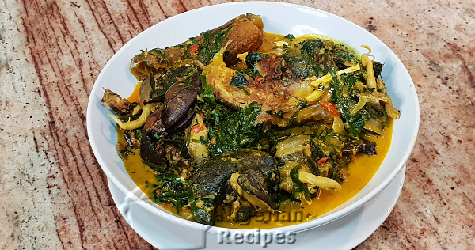

Ofe-Owerri
INGREDIENTS
- Assorted Fish such as Dry Fish, Stock Fish
- 10 corms medium cocoyam
- 1/2 cup of palm oil
- Assorted Meat such as Beef, Snail, Cow skin(pommo)
- 1/4 cup of ground crayfish
- Habanero pepper (to your taste)
- 1 small seasoning cubes
- 1 medium bunch of Ugu (Nigerian pumpkin leaves)
- 1 small bunch okazi (Afang leaves, Gnetum africanum)
METHODS
- Boil the meat and fish with the seasoning cubes till done. Cook the cocoyam till soft, peel and pound into a smooth paste with a mortar. You can also use your blender
- Pick the vegetables, rinse very well and chop the ugu into tiny pieces. Cut the okazi into thin slices
- Soak the dry fish in water, when soft, clean, de-bone and break into small pieces.Chop the habanero peppers.

UKWA
INGREDIENTS
- 700g African Breadfruit
- 2 medium dry fish
- 7g edible potash
- 5-6 fresh bitter leaves
- Pepper & Salt (to taste)
- 1 small seasoning cubes
METHODS
- Put the thoroughly washed ukwa in a sizeable pot.
- Pour enough water to cover the ukwa. The level of water should be about 1 inch above the level of the ukwa.
- Add the edible potash. Add the dry fish or stock fish, cover the pot and cook till well done.
- Add enough palm oil to the well done ukwa, add pepper, stock cubes and salt to taste.